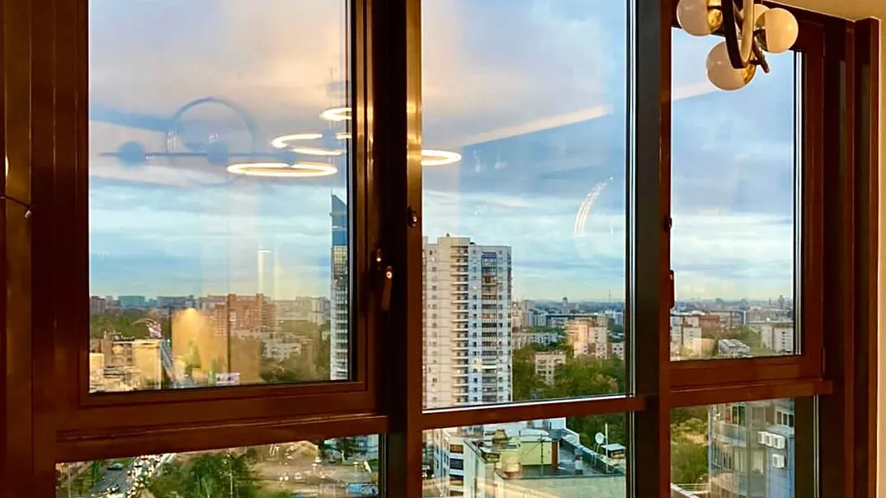
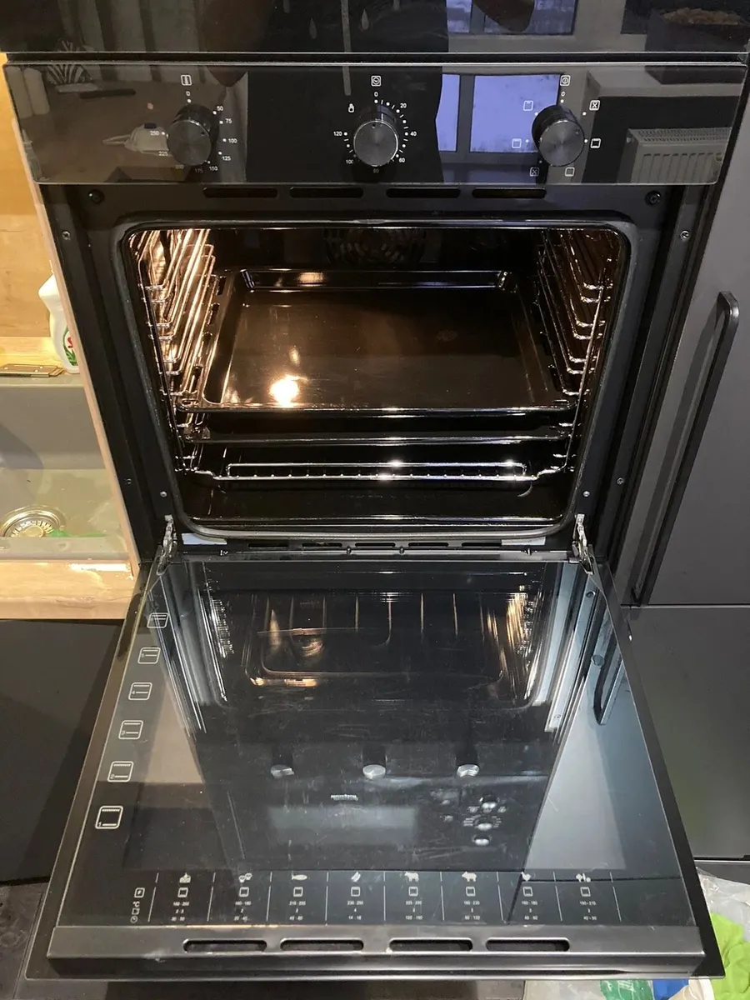
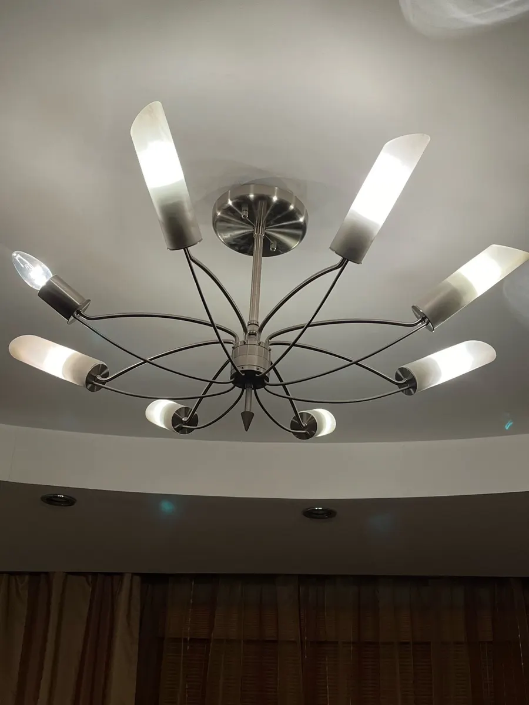
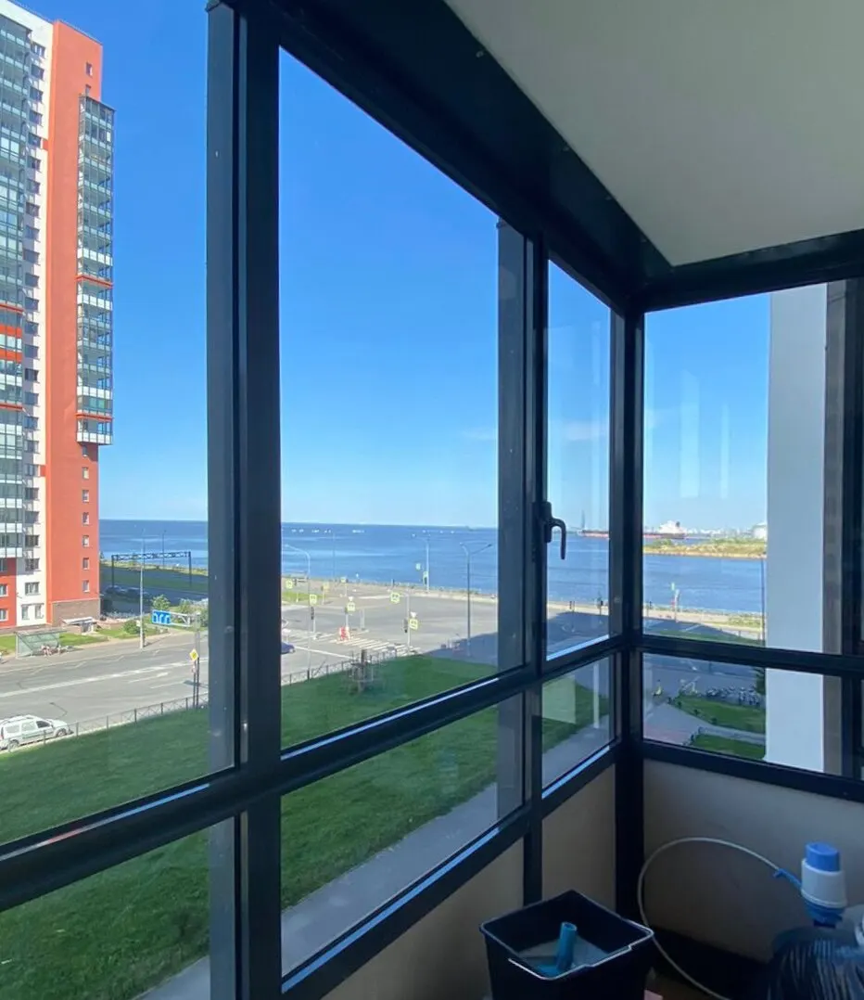

Клининг · Санкт-Петербург
Уборка квартир, офисов и мытьё окон в Санкт-Петербурге
Генеральная и поддерживающая уборка, уборка после ремонта, мытьё окон, балконов и витрин. Работаем круглосуточно, ежедневно.

- Работаем круглосуточно, ежедневно
- Окна, балконы, лоджии, витрины
- Рейтинг 4,7 на Яндекс.Картах
Цены на уборку
Цены из прайса на карточке в Яндекс Картах – указаны «от». Итог зависит от степени загрязнения, сложности и метража.
Уборка
- Поддерживающая уборкарегулярный порядок в квартире, доме или офисеот 3 000 ₽
- Генеральная уборкаквартиры, дома, офисыот 6 000 ₽
- Уборка после ремонтаитог зависит от метражаот 160 ₽ за м²
Окна
- Мытьё окон и балконовокна, балконы, лоджии, витрины; итог зависит от числа створокот 600 ₽
Конечную стоимость называют после уточнения загрязнения, сложности и количества квадратных метров или створок.
Как заказать
- 01
Заявка
Пишете в WhatsApp или звоните: что убрать, площадь, адрес.
- 02
Расчёт
Стоимость зависит от загрязнения, сложности и метража – её называют до начала работ.
- 03
Приезд
Бригада приезжает в согласованное время.
- 04
Уборка
Квартиры, дома, офисы, окна и балконы – по выбранной услуге.



Что пишут клиенты
Быстро
Отзыв: заказ приняли за час, уборка перед приездом гостей.
Окна и панорамные стёкла
Отзывы: мойка окон и панорамных окон – нареканий нет.
Приятные люди
Отзыв: «приятные ребята приехали, все быстро и качественно сделали».
Отзывы с Яндекс.Карт
«Срочно понадобилась уборка перед приездом гостей. Приняли заказ за час, управились быстро. Гости оценили чистоту. Рекомендуем))»
Андрей Солуянов · 17 марта
«Проводили клининг в 3-х комнатной квартире, также мыли панорамные окна. Нареканий нет, все качественно, быстро и профессионально! Будем обращаться еще.»
Антонина Андреевна · 23 апреля 2025
«Обращался к Игорю по мойке окон, результатом доволен, приятные ребята приехали, все быстро и качественно сделали, спасибо, буду обращаться еще!»
Даниил · 2 марта
Отзывы с карточки на Яндекс.Картах, без правок.
Контакты
- Адрес
- Средний проспект Васильевского острова, 18А, Санкт-Петербург
- Часы
- Круглосуточно, ежедневно
- Телефон
- +7 (965) 752-28-97